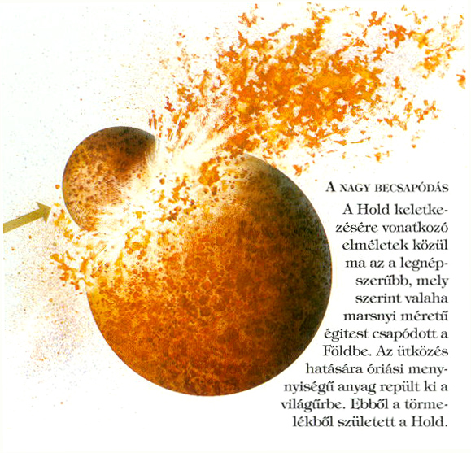
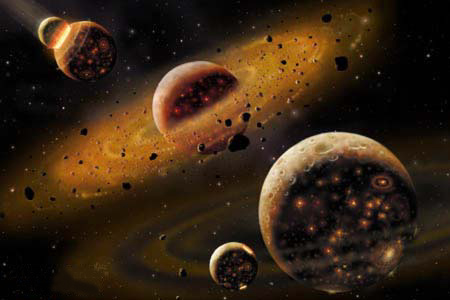

A Hold
A Naprendszerben az 5. legnagyobb hold, a kőzetbolygók esetében egyedülállóan nagy holdról van szó. Az anyabolygójához képest a Hold a legnagyobb kísérő égitest.
A Holdnak gyakorlatilag nincsen légköre, felszínének hőmérséklete pedig +130 °C és -160 °C között váltakozik.
Miközben a Nap körül mozognak, a Föld és a Hold kering a közös tömegközéppontjuk körül . A Hold ún. kötött keringést végez,
a tengelyforgási és a keringési idő megegyezik, ezért mindig ugyanazt az oldalát mutatja felénk . A Hold tömegeloszlása nem egyenletes,
tömegközéppontja 3 km-rel a Föld irányában van eltolódva a geometriai középponthoz képest.
A Hold űreszközökkel való kutatása 1959-ben kezdődött. Az Apollo-program keretében 1969. július 21-én Neil Armstrong és Edwin Aldrin voltak az
első emberek, akik a Hold felszínére léphettek. Összesen 6 expedíció során 12 amerikai férfi járt a Holdon, utoljára 1972 decemberében. Néhány
napos, később hetes felszíni tartózkodásaik alatt kőzetmintákat gyűjtöttek, a holdautóval nagyobb területeket jártak be. A kihelyezett szeizmográfok
méréseiből később a Hold belső szerkezetére lehetett következtetni. Az új eredmények szerint a külső mag még nem hűlt ki, folyékony állapotban van.
A magas költségek miatt azóta nem volt holdutazás, újabban viszont több nemzet is tervezi. Napjainkban számos Hold körüli űrszonda vizsgálja a felszínét.
A sarkoknál lévő kráterek mélyén, ahová nem süt be a Nap, vízjeget is kimutattak.

